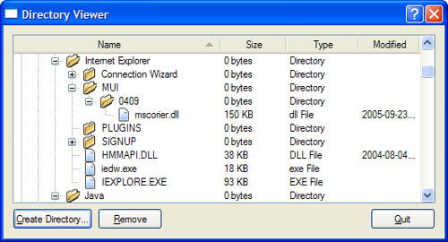
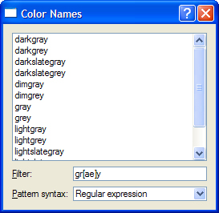

Qt provides several predefined models for use with the view classes:
In this section, we will look at how to use QStringListModel, QDirModel, and QSortFilterProxyModel. We cover the SQL models in Chapter 13.
Let's begin with a simple dialog that users can use to add, delete, and edit a QStringList, where each string represents a team leader. The dialog is shown in Figure 10.6.

Here's the relevant extract from the constructor:
TeamLeadersDialog::TeamLeadersDialog(const QStringList &leaders,
QWidget *parent)
: QDialog(parent)
{
model = new QStringListModel(this);
model->setStringList(leaders);
listView = new QListView;
listView->setModel(model);
listView->setEditTriggers(QAbstractItemView::AnyKeyPressed
| QAbstractItemView::DoubleClicked);
...
}We begin by creating and populating a QStringListModel. Next we create a QListView and set its model to the one we have just created. We also set some editing triggers to allow the user to edit a string simply by starting to type on it or by double-clicking it. By default, no editing triggers are set on a QListView, making the view effectively read-only.
void TeamLeadersDialog::insert()
{
int row = listView->currentIndex().row();
model->insertRows(row, 1);
QModelIndex index = model->index(row);
listView->setCurrentIndex(index);
listView->edit(index);
}When the user clicks the Insert button, the insert() slot is invoked. The slot begins by retrieving the row number for the list view's current item. Every data item in a model has a corresponding "model index", which is represented by a QModelIndex object. We will look at model indexes in detail in the next section, but for now it is sufficient to know that an index has three main components: a row, a column, and a pointer to the model to which it belongs. For a one-dimensional list model, the column is always 0.
Once we have the row number, we insert one new row at that position. The insertion is performed on the model, and the model automatically updates the list view. We then set the list view's current index to the blank row we just inserted. Finally, we set the list view to editing mode on the new row, just as though the user had pressed a key or double-clicked to initiate editing.
void TeamLeadersDialog::del()
{
model->removeRows(listView->currentIndex().row(), 1);
}In the constructor, the Delete button's clicked() signal is connected to the del() slot. Since we are just deleting the current row, we can call removeRows() with the current index position and a row count of 1. Just like with insertion, we rely on the model to update the view accordingly.
QStringList TeamLeadersDialog::leaders() const
{
return model->stringList();
}Finally, the leaders() function provides a means of reading back the edited strings when the dialog is closed.
TeamLeadersDialog could be made into a generic string list editing dialog simply by parameterizing its window title. Another generic dialog that is often required is one that presents a list of files or directories to the user. The next example, shown in Figure 10.7, uses the QDirModel class, which encapsulates the computer's file system and is capable of showing (and hiding) various file attributes. This model can apply a filter to restrict the kinds of file system entries that are shown and can order the entries in various ways.

We will begin by looking at the creation and setting up of the model and the view in the Directory Viewer dialog's constructor.
DirectoryViewer::DirectoryViewer(QWidget *parent)
: QDialog(parent)
{
model = new QDirModel;
model->setReadOnly(false);
model->setSorting(QDir::DirsFirst | QDir::IgnoreCase | QDir::Name);
treeView = new QTreeView;
treeView->setModel(model);
treeView->header()->setStretchLastSection(true);
treeView->header()->setSortIndicator(0, Qt::AscendingOrder);
treeView->header()->setSortIndicatorShown(true);
treeView->header()->setClickable(true);
QModelIndex index = model->index(QDir::currentPath());
treeView->expand(index);
treeView->scrollTo(index);
treeView->resizeColumnToContents(0);
...
}Once the model has been constructed, we make it editable and set various initial sort ordering attributes. We then create the QTreeView that will display the model's data. The QTreeView's header can be used to provide user-controlled sorting. By making the header clickable, the user can sort by whichever column header they click, with repeated clicks alternating between ascending and descending orders. Once the tree view's header has been set up, we get the model index of the current directory and make sure that this directory is visible by expanding its parents if necessary using expand(), and scrolling to it using scrollTo(). Then we make sure that the first column is wide enough to show all its entries without using ellipses (...).
In the part of the constructor code that isn't shown here, we connected the Create Directory and Remove buttons to slots to perform these actions. We do not need a Rename button since users can rename in-place by pressing F2 and typing.
void DirectoryViewer::createDirectory()
{
QModelIndex index = treeView->currentIndex();
if (!index.isValid())
return;
QString dirName = QInputDialog::getText(this,
tr("Create Directory"),
tr("Directory name"));
if (!dirName.isEmpty()) {
if (!model->mkdir(index, dirName).isValid())
QMessageBox::information(this, tr("Create Directory"),
tr("Failed to create the directory"));
}
}If the user enters a directory name in the input dialog, we attempt to create a directory with this name as a child of the current directory. The QDirModel::mkdir() function takes the parent directory's index and the name of the new directory, and returns the model index of the directory it created. If the operation fails, it returns an invalid model index.
void DirectoryViewer::remove()
{
QModelIndex index = treeView->currentIndex();
if (!index.isValid())
return;
bool ok;
if (model->fileInfo(index).isDir()) {
ok = model->rmdir(index);
} else {
ok = model->remove(index);
}
if (!ok)
QMessageBox::information(this, tr("Remove"),
tr("Failed to remove %1").arg(model->fileName(index)));
}If the user clicks Remove, we attempt to remove the file or directory associated with the current item. We could use QDir to accomplish this, but QDirModel offers convenience functions that work on QModelIndexes.
The last example in this section, shown in Figure 10.8, demonstrates how to use QSortFilterProxyModel. Unlike the other predefined models, this model encapsulates an existing model and manipulates the data that passes between the underlying model and the view. In our example, the underlying model is a QStringListModel initialized with the list of color names recognized by Qt (obtained through QColor::colorNames()). The user can type a filter string in a QLineEdit and specify how this string is to be interpreted (as a regular expression, a wildcard pattern, or a fixed string) using a combobox.

Here's an extract from the ColorNamesDialog constructor:
ColorNamesDialog::ColorNamesDialog(QWidget *parent)
: QDialog(parent)
{
sourceModel = new QStringListModel(this);
sourceModel->setStringList(QColor::colorNames());
proxyModel = new QSortFilterProxyModel(this);
proxyModel->setSourceModel(sourceModel);
proxyModel->setFilterKeyColumn(0);
listView = new QListView;
listView->setModel(proxyModel);
...
syntaxComboBox = new QComboBox;
syntaxComboBox->addItem(tr("Regular expression"), QRegExp::RegExp);
syntaxComboBox->addItem(tr("Wildcard"), QRegExp::Wildcard);
syntaxComboBox->addItem(tr("Fixed string"), QRegExp::FixedString);
...
}The QStringListModel is created and populated in the usual way. This is followed by the construction of the QSortFilterProxyModel. We pass the underlying model using setSourceModel() and tell the proxy to filter based on column 0 of the original model. The QComboBox::addItem() function accepts an optional "data" argument of type QVariant; we use this to store the QRegExp::PatternSyntax value that corresponds to each item's text.
void ColorNamesDialog::reapplyFilter()
{
QRegExp::PatternSyntax syntax =
QRegExp::PatternSyntax(syntaxComboBox->itemData(
syntaxComboBox->currentIndex()).toInt());
QRegExp regExp(filterLineEdit->text(), Qt::CaseInsensitive, syntax);
proxyModel->setFilterRegExp(regExp);
}The reapplyFilter() slot is invoked whenever the user changes the filter string or the pattern syntax combobox. We create a QRegExp using the text in the line editor. Then we set its pattern syntax to the one stored in the syntax combobox's current item's data. When we call setFilterRegExp(), the new filter becomes active, meaning that it discards any strings that don't match the filter and the view is automatically updated.